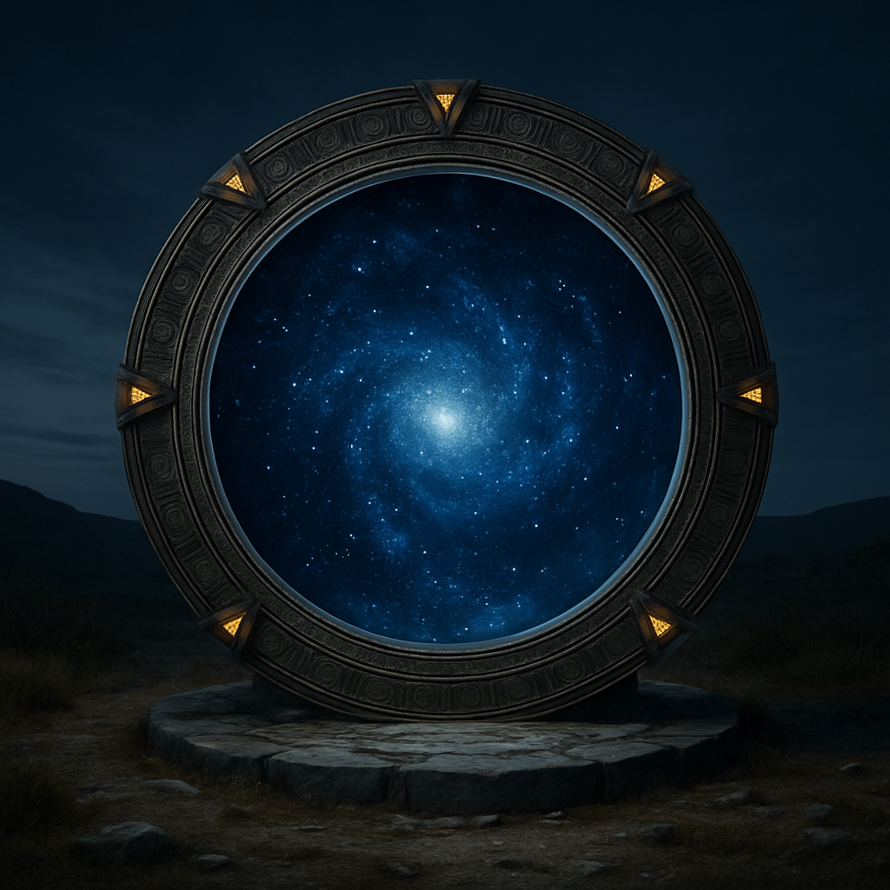
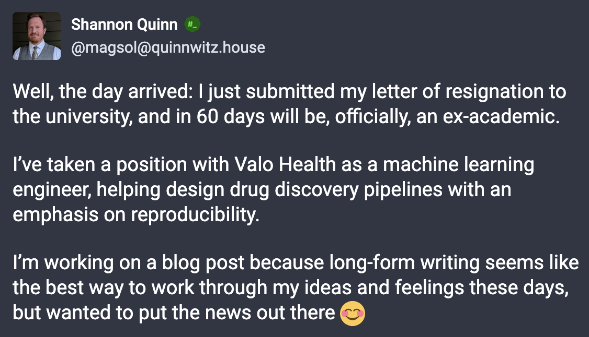
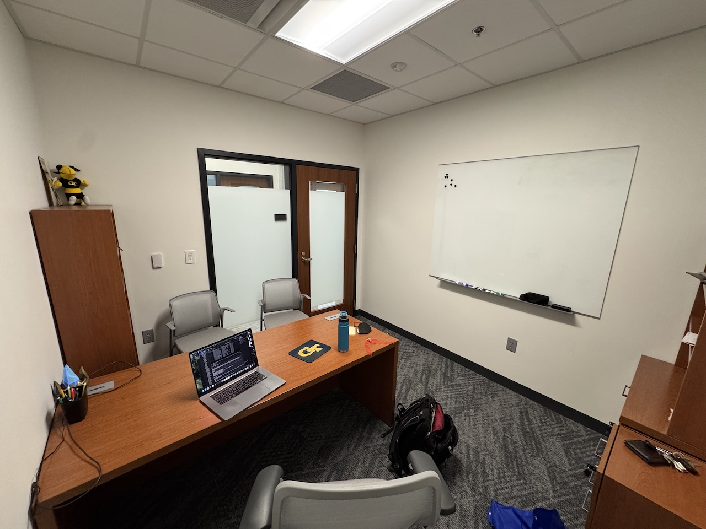
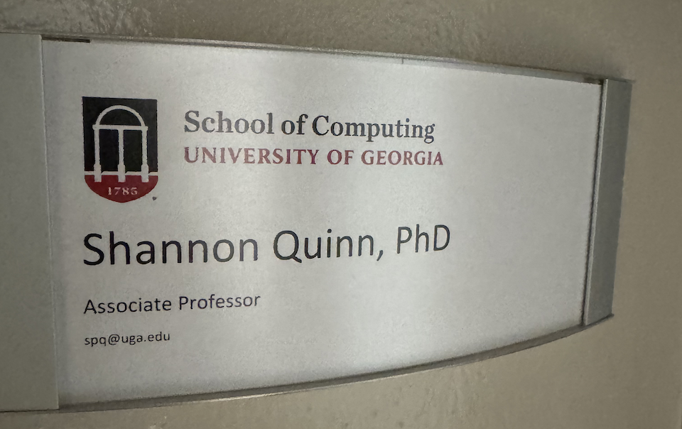

…except death and taxes. Yeah, I know the quote. I just wish I knew what came next.
Hunt for the Red October perfect role
In case you don’t follow me on Mastodon, I recently posted this:

Almost exactly two years ago, I wrote this post about burnout and my then-current resolve to leave academia. A lot changed in that time: I intentionally cultivated agency, scored an incredibly productive sabbatical (both professionally and personally), and set about creating a new faculty role for myself at UGA. I was adament that I would make a decision about my career, and stand behind it. Set myself up to succeed. Commit.
I’ll admit that, in my more cynical moments, I doubted whether I was committing or simply continuing to avoid making a decision. Inspired by the work I did at PredxBio, I was pursuing multiple interlocking federal grants that would not only jumpstart the next phase of my academic career, but catapult it in a relatively new direction. I was reaching out to faculty at in new departments to forge collaborations. I worked with the UGA Institute of Bioinformatics to move my role entirely out of Computer Science and into where it probably should have been all along. I even got a new office to reflect my changed role.

At the same time, I was applying for industry jobs like a fiend; since January 1, I submitted 95 job applications. Only half of those I heard back from; most of these were what I took to calling “desk rejects,” i.e.: “thanks but no thanks.” But there were a handful that wanted to interview me. A couple halted the interview process when I said I had no interest in relocating. Another ended the process after a coding question. Yet another flew me out to their on-site HQ (after five rounds of remote interviews), told me after I “basically had the job,” and then rescinded the soft offer a few days later on the vague notion that I wasn’t committed enough to start-up life1.
Cynicism aside, the objective truth is that I was going full-speed on both sides of the ball. But if I stopped to think about it, I still wondered: was I just putting off a decision?
Agency agency agency
Following a late May NIH grant deadline that got DOGE’d only three days before2, I went into June thinking I’d take a couple weeks off. The Spring 2025 semester was brutal, unlike any teaching semester I’d had in my last 10 years, and between that and the DOGE’d deadline I desperately needed a breather.
Right around this time, another job opportunity hit my radar, right as I’d returned from that aforementioned whirlwind on-site interview. It also nearly ended just as quickly: after the initial intake, I was told that—because they “didn’t do business in Georgia”—I was no longer under consideration.
But in a very not-me move, I pushed back: I argued that, at the very least, we should keep talking to find out if it was even a problem that needed solving, and at most, whether the problem’s solution was a win-win for all involved.
This actually worked! They reached back out, put me on the interview calendar, and holy cow: it was easily the most enjoyable interview process of 2025. I really felt as though I was connecting with the people I met. And only a couple hours after a quick chat with their CTO, an offer came down the pipe that was, to put it simply, too good to pass up.
I spent the first 24 hours after receving the offer just letting it soak in3. For the subsequent 24-36 hours, I did my homework. I really did. I considered, first and foremost: Is this the job I’d leave academia for? Somewhat to my surprise, the answer to this from the start had been an emphatic “Yes” but the process had, if anything, only solidified it further. I also went through the pros-and-cons process4, structuring what it would look like to stay or leave UGA, respectively. And in every case, this new role won out.
From imaging to drug discovery
I’ll have more to say about this later, but quickly: the new role is with Valo Health, a drug discovery “start-up” (it’s insanely successful and has at least 150 employees, so yes it’s technically a start-up). I’m joining the engineering team to work on the machine learning end with a focus on reproducibility. It’s definitely a step away from where I’ve been focusing the last decade, but during the interview it was made clear that after the first year they’ll be looking to leverage that expertise more into new areas.
An exciting role with room to grow. Can’t really ask for much more!
Never a black-and-white scenario
The decision itself may have been clear, but that did not make it easy, nor painless; quite the opposite on both counts, in fact. UGA was my first “real” job, outside of internships and assistantships. I made progress in my role, winning the proverbial Ivory Tower Pie Eating Contest5. And to be completely frank, the part I enjoyed the most—hands down—was getting to work with my dad. He’s always been a hero of mine for as long as I can remember, and working on a research team and publishing papers together was truly a dream come true.
More broadly, that’s where this decision is the hardest to accept: an aching feeling of letting these people down. Of abandoning good people in a fight that needs to be fought. Of walking away from obligations that others will have to scramble to handle in my absence. Of leaving behind something that others put time and energy into, and of betraying trust.
I’ve always been a “put the team first” sort of person, which I’ve had to unlearn in my adult years, at least to the extent where I can set and hold healthy boundaries. This has been especially true around work/life balance, something academia will take every inch you give and run a ten miles with. And that’s where at least part of the guilt comes from: obligations which I don’t necessarily want to do, but which I know need to be done, and which I know will fall more heavily on others.
It’s the people
But most of all, it’s the people I’ll miss.
Of course I’ll miss the research questions I never fully answered despite having no shortage of ideas for how to try. I’ll miss the teaching pedagogies and infrastructure I was never able to finish implementing. I’ll miss the crazier ideas for new research institutes (I’ve bounced around ideas for two distinct research centers), new Freshman Odyssey courses (buy everyone in the course a Raspberry Pi; how cool would that be?!), new Data Science Practicum projects (imagine: a tournament of StarCraft bots), and new open source software contributions (I’d really hoped cilia2vec would eventually be a thing).
But above all that, I’ll miss the colleagues I met and relationships I built. I’ll miss the students who responded positively to the everyone-is-a-Cosmere-protagonist environment I seemed to cultivate from day 1. I’ll miss the people who had my back, especially in the past couple years. I’ll miss the people who were intentional about lowering the ladder as they climbed it, and the people who took a beat to check in with others around them. I’ll miss having a professional excuse to throw batshit ideas against the wall while having coffee with my Dad on the occasional calm work morning.
This is where it’s not so much a “decision” as a “process”.

Disentanglement
Logistically, there’s a lot to unravel and wind down in the next several weeks, the biggest of which is a brand new undergraduate degree program: an applied computational science degree. I had fever dreams of seeing just about every single Franklin unit involved, making it less a degree program and more a four-year fusion of undergraduate instruction and graduate research. That could still happen, but I need to accelerate my groundwork so the lovely folks working with me on it aren’t left to pick up the pieces.
Emotionally… it’s a lot more complicated.
I’ve made no secret6 over the post-COVID years of my dissatisfaction with academia in general and my role in particular. As part of my “agency” resolution, I wanted to experiment with changing units at UGA: moving out of Computer Science and into the Institute of Bioinformatics. This move was predicated on the hypothesis that some of the aspects of my job that were most draining could be ameliorated, e.g.: a different and less intense instructional load; not only support for, but outright embrace of, interdisciplinary research; a cohesive and concrete vision for the unit broken down into actionable milestones; just to name a few.
And so far, this move had been everything I’d hoped it to be. Except for expedient: it’s been about a full year since I had that first meeting with the IOB, and at least on paper, that move won’t become official for another week (July 1).
Just in time for me to resign a month and a half later.
So another dimension of my mental gymnastics is the warped idea that I haven’t given this new self-direction enough time to mature. After all, didn’t I say I wanted to commit? How is leaving right before a new role kicks in “committing”?
Honestly, this is the hardest part of my decision. I know it’s the right call, but I can’t and won’t ever be completely certain that—had I decided to keep going down the academic route—I wouldn’t have found a way to make it everything I’d hoped. After 10 years, I can feel pretty confident about it, but it’s impossible to be certain. And, of course, there’s never a guarantee that the grass really is greener.
Nothing is certain. I’ve done the best I can; all that’s left is to hope.
Footnotes
Quite the galling thing to say when I flew out on a home-and-back-in-36-hours-flat trip on a mere 6 days’ notice, but hey, I got to see some dear friends I hadn’t seen since 2021 so as far as I’m concerned, it was their loss.↩︎
I wish this was a joke. On May 25, it was announced that a bunch of NIH grants had been discontinued, including the one I was working on that was due May 28.↩︎
Ask Cathryn about the shit I pulled :)↩︎
Thanks to the 5+ year in-progress blog post about academia that may never see the light of day, I already had this pretty well laid out.↩︎
i.e., tenure, where the prize is more pie.↩︎
At least, no secret in private.↩︎
Citation
@online{quinn2025,
author = {Quinn, Shannon},
title = {Nothing {Is} {Certain}},
date = {2025-06-25},
url = {https://magsol.github.io/2025-06-25-nothing-is-certain},
langid = {en}
}